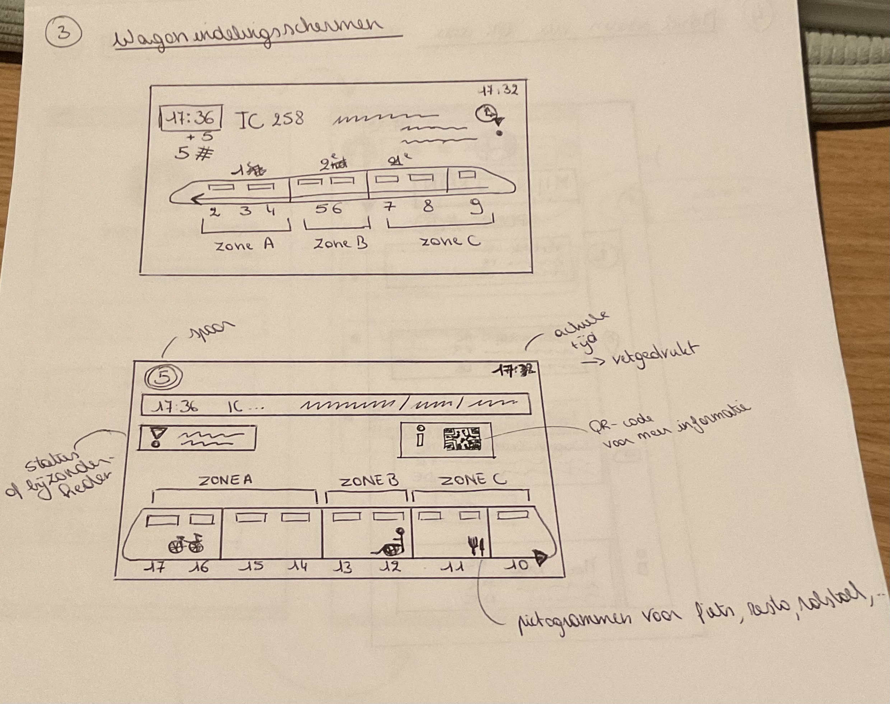
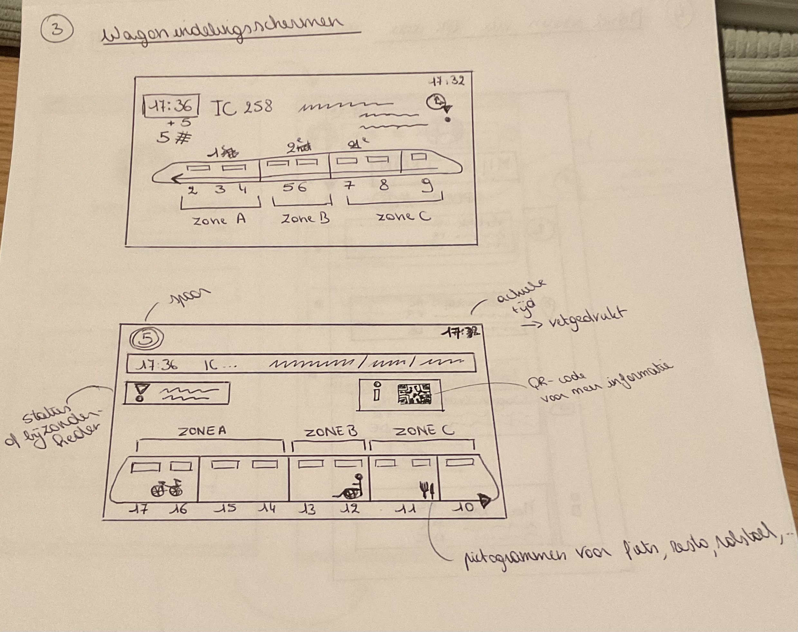

Low-fidelity prototypes
In de eerste week zijn we aan de slag gegaan met het ontwerpen van low-fidelity prototypes. We moesten 3 treinschermen tekenen en voor elk scherm enkele variaties. Voordat ik ben begonnen met het effectief tekenen van deze schermen, heb ik eerst een klein gebruikersonderzoek gedaan.
Gebruikersonderzoek
-
Werknemer met weinig tijd: "Ik kijk eerst naar de actuele tijd en zoek dan de tijd van mijn trein op het bord."
→ DUS: Belangrijk om zowel effectieve tijd en tijd van de trein duidelijk zichtbaar te maken. -
Student: "Ik kijk meteen naar de vertrektijd, maar ook de nummer van de trein zodat ik zeker juist zit."
→ DUS: Belangrijk om ook het type trein & de treinnummer weer te geven.
Vooruitgang
- Eerst heb ik enkele treinschermen van de NMBS opgezocht als referentie.
-

- Deze zomer heb ik de TGV genomen in Frankrijk en probeer mij te herinneren hoe die wagonborden eruit zagen om als eventuele inspiratie te gebruiken.
- Mijn eerste schetsen in de les waren heel basic.
- Deze heb ik thuis verder uitgewerkt en ook enkele variaties opgemaakt.

 
